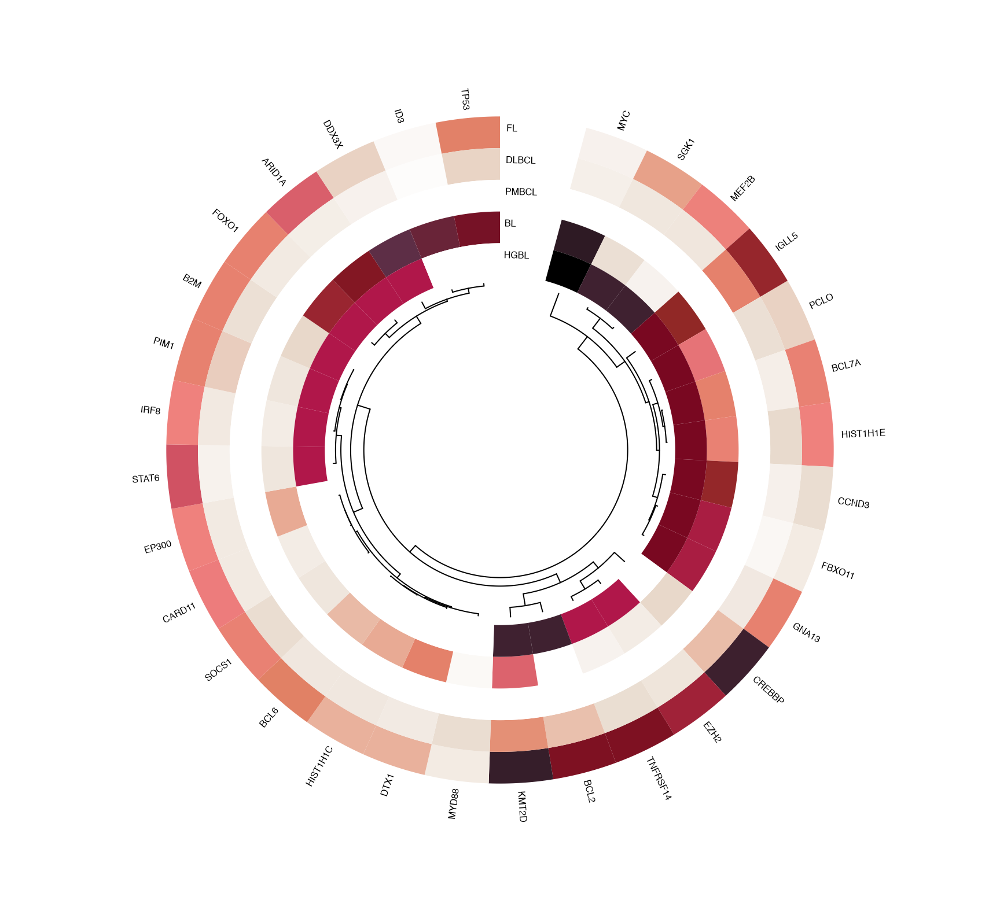
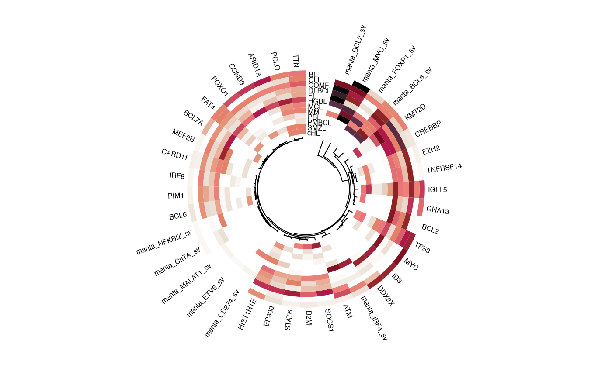
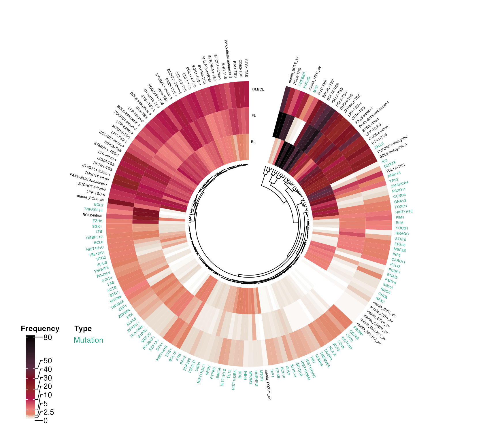

pretty_circular_mutation_frequency_heatmap.Rdpretty_circular_mutation_frequency_heatmap
pretty_circular_mutation_frequency_heatmap(
prettyOncoplot_output,
cn_status_matrix,
collated_results,
these_samples_metadata,
genes,
cluster = T,
keep_these_pathologies,
min_sample_num = 20,
col_fun,
col_theme,
return_data = FALSE,
dend_location = "inside",
clustering_distance_method = "euclidean",
border = T,
split_by_type = FALSE,
rotate_degrees = 0,
gap.degree = 15,
show.sector.labels = FALSE,
label_cex = 0.5,
rownames_cex = 0.5,
include_legend = F,
colour_labels = F,
label_group = "text",
label_alpha
)The output of the prettyOncoplot function
The output of get_cn_states
A list of data frames with sample_id as rownames and features as column names
A data frame with metadata. Usually the output of [GAMBLR.results::get_gambl_metadata].
A vector of genes to label
Whether to perform clustering. Default is TRUE (clustering is performed).
A vector of pathology values to show in the plot. All the remaining rows will be ignored.
Minimum number of samples in a pathology to be considered for the plot. Pathologies with less than this number will be excluded. (20)
Color function to modify the default color pallette of the heatmap.
Alternatively, provide the color theme instead of `col_fun` to change the default colors of the heatmap.
Conditionally return the formatted data used for the plotting. Default is FALSE (only image is plotted and no data is returned).
Location of the dendrogram. Default is "inside".
Clustering method. Default is "euclidean".
Whether to draw border around heatmap. Default is TRUE (with border).
Whether to split the mutations by type. Default is FALSE (no splitting).
Rotate labels. Default is 0 (no rotation).
Gap degree. Default is 15.
Show labels for each sector of the heatmap. Default is FALSE (no labels).
Number indicating the amount by which plotting text and symbols should be scaled relative to the default when displaying the labels. Default is 0.5.
Number indicating the amount by which plotting text and symbols should be scaled relative to the default when displaying the rownames. Default is 0.5.
Whether to include the legend. Default is FALSE (no legend).
Optionally color labels. Default is FALSE (no coloring).
How to group the labels. Default is "text".
Value from 0 to 1 to control alpha of the label.
Nothing or a list of data frames (when return_data = TRUE)
library(dplyr)
suppressMessages(
suppressWarnings({
metadata <- get_gambl_metadata() %>%
filter(!seq_type == "mrna") %>%
filter(pathology %in% names(get_gambl_colours("pathology"))) %>%
distinct(sample_id, .keep_all = TRUE)
all_coding <- get_coding_ssm(these_samples_metadata = metadata)
genes <- lymphoma_genes %>%
filter(DLBCL|FL|BL) %>%
pull(Gene) %>%
unique %>%
sort
oncoplot_output <- prettyOncoplot(
all_coding,
genes = genes,
minMutationPercent = 2,
these_samples_metadata = metadata,
simplify_annotation = TRUE,
return_inputs = TRUE
)
# Basic plot
pretty_circular_mutation_frequency_heatmap(
prettyOncoplot_output = oncoplot_output,
keep_these_pathologies = c(
"FL", "DLBCL", "PMBCL", "BL", "HGBL"
)
)
}))

suppressMessages(
suppressWarnings({
# Add sv layer
all_sv <- get_manta_sv(these_samples_metadata = metadata)
annotated_sv <- annotate_sv(all_sv) %>%
filter(gene %in% genes, !is.na(partner)) %>%
select(sample_id = tumour_sample_id, gene)
# This is to replicate the output format of collate_sv
sv_collated <- annotated_sv %>%
mutate(
gene = paste("manta", gene, "sv", sep = "_"),
mutated = "POS"
) %>%
distinct %>%
tidyr::pivot_wider(
names_from = gene,
values_from = mutated
) %>%
replace(is.na(.), "NEG")
# Plot SSM + SVs
pretty_circular_mutation_frequency_heatmap(
collated_results = list(sv_collated),
prettyOncoplot_output = oncoplot_output,
these_samples_metadata = metadata
)
}))
#> [1] "dropping capture samples because manta results\n are only available for genome seq_type"
#> [1] "No Manta SVs found for 322 samples and 13 cohorts"
#> [1] "DLBCL_LSARP_Trios" "tFL_LSARP_Trios" "pFL_LSARP_Trios"
#> [4] "FL_FOLL_BR" "DLBCL_TFRI_DarkZone" "DLBCL_Pasqualucci"
#> [7] "DLBCL_montreal" "DLBCL_Jain" "DLBCL_cell_lines"
#> [10] "MCL_CellLines" "cHL_Maura" "MM_mmsanger"
#> [13] "SMZL_Strefford"

suppressMessages(
suppressWarnings({
regions_bed = create_bed_data(grch37_ashm_regions,
fix_names = "concat",
concat_cols =c("gene","region"),
sep="-")
# Add aSHM data
ashm_freq <- get_ashm_count_matrix(
regions_bed = regions_bed,
this_seq_type = "genome"
)
ashm_freq_collated <- mutate(ashm_freq,across(,~ifelse(.x>0,1,0)))
ashm_freq_collated <- ashm_freq_collated[,colSums(ashm_freq_collated) >130]
ashm_freq_collated <- tibble::rownames_to_column(ashm_freq_collated,
"sample_id")
# Comprehensive plot with SSM + SV + aSHM and some non-default arguments
pretty_circular_mutation_frequency_heatmap(
collated_results = list(sv_collated, ashm_freq_collated),
prettyOncoplot_output = oncoplot_output,
these_samples_metadata = metadata,
keep_these_pathologies = c("DLBCL", "FL", "BL"),
split_by_type = TRUE,
colour_labels = TRUE,
label_cex = 0.4,
rownames_cex = 0.4,
include_legend = TRUE
)
}))
